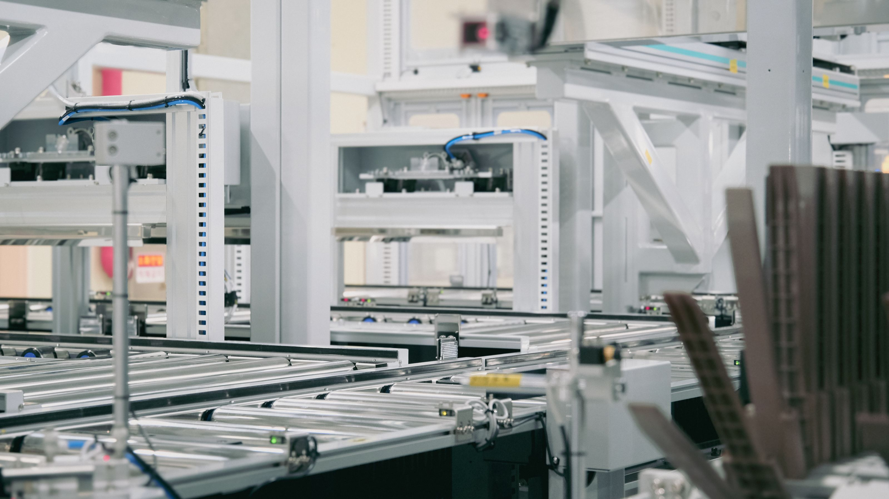
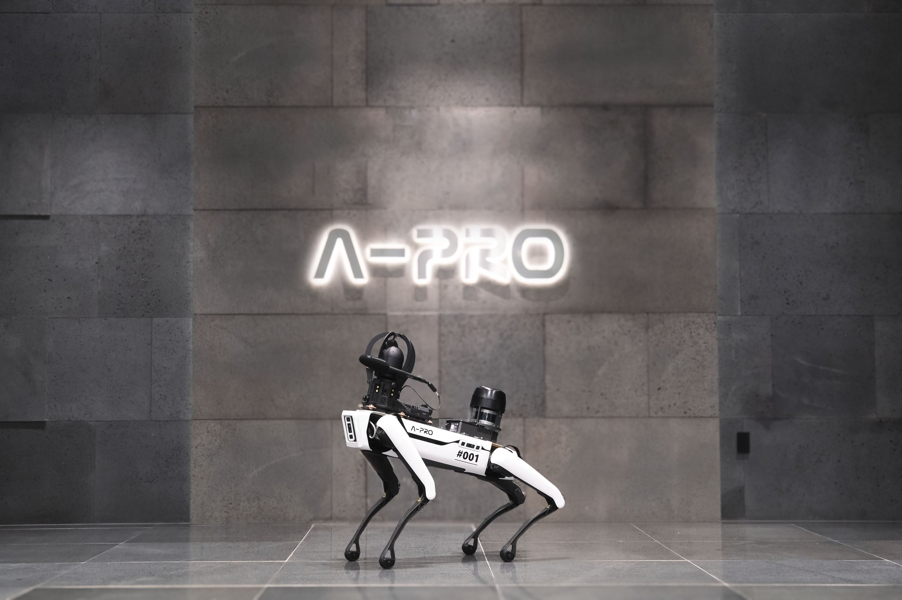
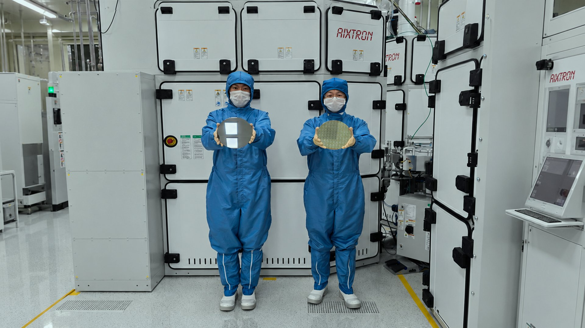

이차전지 활성화 공정의 주요 설비를 자체 기술로 만듭니다.
셀의 성능과 품질을 결정짓는 마지막 공정까지, A-PRO가 책임집니다.

AI로 배터리와 설비의 상태를 읽어냅니다.
진단부터 충전·제어까지, 전기 모빌리티의 데이터를 잇습니다.

질화갈륨(GaN)을 기반으로 전력반도체와 RF반도체를 설계, 생산합니다.
국내 최대 규모의 8인치 EPI 양산 체계와 칩 설계 역량을 갖췄습니다
Applied Electronics, Electric and Mechatronics첨단 전자·전기·메카트로닉스 기술력
Diversification & Customization다양한 요구에 대응하는 맞춤형 제작
Our founding philosophy has always been focused on optimization최적화를 지향하는 통합설계
Advanced flexibility and a high level of specialization높은 유연성과 전문성을 갖춘 자동화 공정
에이프로의 새로운 소식을 전해드립니다